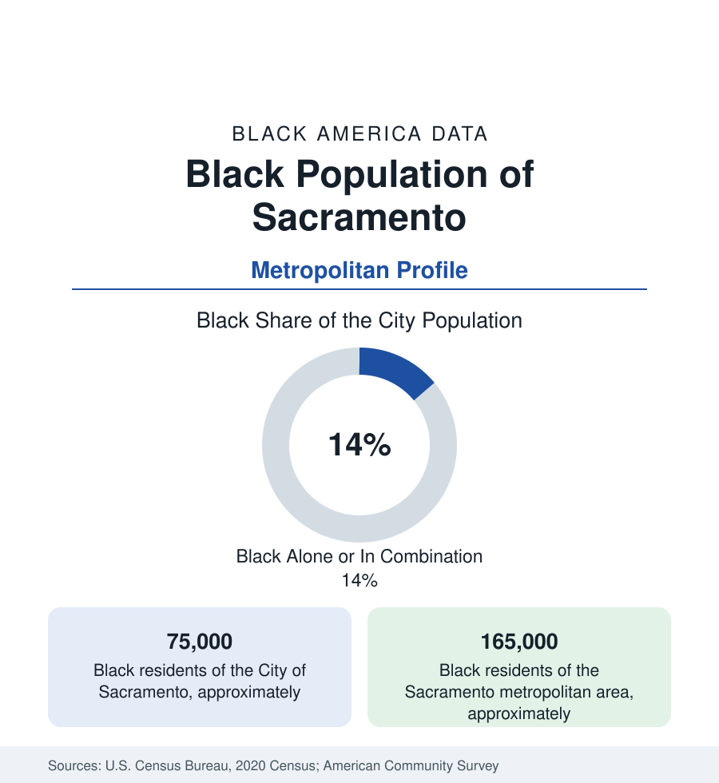

Black Cities
Black Sacramento: The Capital's South Side and Del Paso Heights
Sacramento holds about 75,000 Black residents in the city and 165,000 across the metro — a state-capital community in California's affordability refuge. The census profile.

Sacramento holds about 75,000 Black residents within the city — Black alone or in combination, roughly 14 percent of California's capital — and about 165,000 across the metropolitan area. Sacramento's Black community is California's inland answer to the Bay Area's displacement: a state-government town whose Black population was built by the railroads and the bases, and which now receives the coastal metros' out-migration as the state's affordability refuge of first resort.
The Districts: Heights, Oak Park, Meadowview
The community's historic geography runs north and south from downtown. Del Paso Heights, the north-side district settled by Black families from the early twentieth century (its Grant Union school district and its business strips), and Oak Park, the city's first streetcar suburb turned Black center by the postwar decades (its 35th Avenue corridor of churches and businesses, the Sacramento Observer's home turf — the Black newspaper is among the West's most honored), form the old cores. South Sacramento — Meadowview, Florin, and the Mack Road corridor — holds the modern mass: postwar subdivisions that became the city's largest Black districts, adjoining Elk Grove, the vast suburb whose Black population (in the range of 30,000-plus) is among the fastest-growing in California. Natomas, the master-planned north, and the Rancho Cordova corridor (around the old Mather base) add the newest layers; East Sacramento and Midtown record the small professional shares of the appreciation core.
The Capital's Employment Pattern
Sacramento is the purest state-capital labor market in the West, and its Black workforce shows the public-sector pattern at full strength: state government (the Capitol's agencies), the county and city, the school districts and Los Rios colleges, the great hospital systems, and the former bases' converted economies (McClellan and Mather as business parks) anchor Black employment with the stability the public-sector profile describes. The result in the data: Black Sacramento's median income runs at the stronger end of California's Black metros — above Los Angeles's and Oakland's on several measures — built on government wages rather than a private boom, with homeownership in the south-side and Elk Grove subdivisions the community's wealth layer. The Observer's long record and the region's Black chamber and professional associations mark an institutional depth above the population's size.
The Bay Area's Refuge
The estimates' loudest Sacramento fact is inflow: the region is the primary in-state destination of the Bay Area's displaced, and Black migration from Oakland, Richmond, and San Francisco to Sacramento County is the documented leading stream — families trading the coast's prices for the valley's subdivisions, commuting's edge cases and all. The data register the transfer in both directions of the ledger: Sacramento's Black population grows and suburbanizes (Elk Grove's trajectory is the emblem), while its housing costs — the state's bargain a decade ago — appreciate on the inflow itself, beginning the affordability argument over again at valley scale. The composition layers the newcomers over the railroad-and-base generations, with a growing African immigrant community in the south corridors.
Change and the Estimates
The metro's Black growth is among California's fastest in the estimates, concentrated in Elk Grove and the south county, with the historic districts in the two-speed pattern (Oak Park repricing at Midtown's edge, Del Paso Heights holding a larger legacy share). The farmworker-belt towns of the valley floor (Stockton is a separate metro with its own substantial Black community; Modesto, Merced, and Fresno extend the valley file southward in the California state profile's terms) tie Sacramento's data to the valley system. The Kings' arena district and the downtown railyards' redevelopment frame the core's live questions.
Reading the Sacramento Numbers
The education layer matches the capital's pattern: Sacramento State and UC Davis (across the causeway) enroll the region's Black students, Sacramento City College and Cosumnes River College carry the broad base, and the Elk Grove and Sacramento City districts' Black enrollments — the latter among the most diverse in California — are the school data in which the inflow generation is being raised.
Sacramento is the capital-refuge profile: a government town's stability underneath, a displacement inflow on top. Its 165,000 Black residents are where California's Black geography is moving — inland, suburban, public-sector anchored — and the valley's tables are the state's Black future in draft.
More in Black Cities
Black Atlanta: Population, Distribution, and Growth of a Black Metropolis
Metro Atlanta holds more than two million Black residents — roughly one in three, second only to New York. The suburban distribution, migration history, and composition of Black Atlanta in the census data.
Black New York: The Largest Black Population in America
The New York metropolitan area holds about 3.4 million Black residents — more than any metro in the nation — and the city itself about two million. The census profile.
Black Washington: The District and the Metro
The Washington metro holds about 1.6 million Black residents, and the District itself — long a majority-Black city — now records a Black share near 41 percent. The census profile.
Source: U.S. Census Bureau, 2020 Census; American Community Survey; Population Estimates Program.